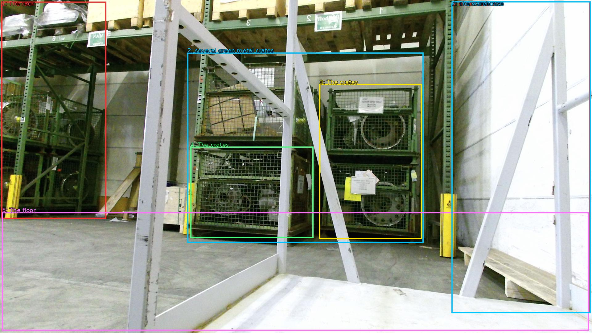

The image shows a large warehouse with a metal rack in the center. The rack is made of metal and has multiple levels, with the top level being elevated and the bottom level being below. On the left side of the rack, there are several green metal crates stacked on top of each other. The crates appear to be empty and are secured with yellow poles. The floor is concrete and there is a concrete wall on the right side. The warehouse appears to be well-lit with natural light coming in from the windows.

Original · Caption raw · Grounding raw · Koordinate
Številke so lokalni ID regije. Dolge slikovne oznake so skrajšane; spodaj so celotne fraze. Napovedane regije se lahko prekrivajo ali opisujejo skupine.
| ID | Celotna fraza | bbox xyxy |
|---|---|---|
| 1 | The rack | [4.799999713897705, 5.940000057220459, 344.6399841308594, 709.02001953125] |
| 2 | several green metal crates | [607.6799926757812, 170.10000610351562, 1373.760009765625, 787.8600463867188] |
| 3 | The crates | [1035.8399658203125, 272.70001220703125, 1368.0, 775.9800415039062] |
| 4 | The crates | [617.2799682617188, 475.7400207519531, 1016.6399536132812, 771.6600341796875] |
| 5 | The floor | [6.71999979019165, 688.5, 1909.43994140625, 1072.9801025390625] |
| 6 | a concrete wall | [1464.0, 4.860000133514404, 1913.2799072265625, 1015.7400512695312] |
| 7 | The warehouse | [1464.0, 4.860000133514404, 1915.199951171875, 1015.7400512695312] |